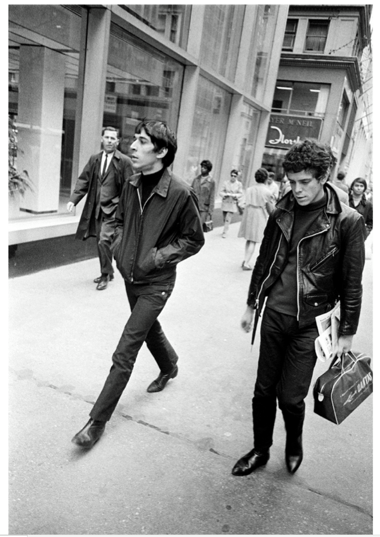

Joel Meyerowitz: “I’ve been looking for this picture for days, ever since I heard about Lou Reed’s death. I shot it in 1968 on 5th ave, just casual shot of an interesting looking guy, only to discover later on that it was Lou Reed and John Cale.”
Insane.